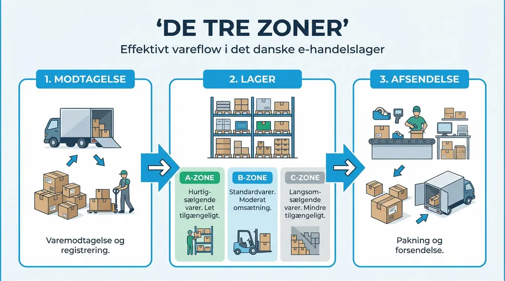

Der er pres på. I sætter en mere på pakkebordet. Ugen efter to mere. Og alligevel er pakkerne ikke ude hurtigere end før. Nogle dage senere.
Det er ikke fordi folk arbejder langsomt. Det er fordi I har købt mere af det, der ikke var flaskehalsen.
Regnestykket som ingen laver
Pallen er kommet. Følgesedlen ligger på kontoret og venter på at blive tastet ind. Indtil den er tastet, kan ordrerne ikke frigives.
Fire plukkere står og venter i ti minutter. Det er ikke ti minutter. Det er 40 medarbejderminutter.
Det er den regning de fleste aldrig laver, fordi ventetid ikke står nogen steder. Der er ingen post i regnskabet der hedder “stod stille”. Man kan se hvad lønnen kostede, og man kan se hvor mange pakker der gik ud. Det derimellem er usynligt.
Med en lagermedarbejder til rundt regnet 215 kr. i timen alt inklusive er de 40 minutter 143 kr. For én leverance. Kommer der tre leverancer om ugen, er det godt 21.000 kr. om året for at vente på et stykke papir.
👉 Vil du se hvor jeres egen ventetid ligger? Tal med SmartPack →
Derfor bliver det værre jo flere I bliver
Når lageret kører på papir og hukommelse, er det ikke systemet der holder styr på hvor tingene er. Det er menneskene. Og mennesker skal tale sammen.
To personer kan råbe til hinanden hen over bordet. Otte kan ikke. Antallet af mulige samtaler vokser hurtigere end antallet af folk:
- 3 på gulvet: 3 par der skal holde hinanden opdateret
- 6 på gulvet: 15 par
- 10 på gulvet: 45 par
Fordobler I bemandingen, femdobler I koordineringen. Det er derfor den ellevte medarbejder ikke giver en ellevtedel mere kapacitet. Han giver måske halvdelen, og han koster de andre tid undervejs.
Oveni kommer at den nye ikke kender lageret. De første uger trækker han en erfaren kollega med sig hver gang han ikke kan finde en vare. To lønninger, én opgave.
Fire steder hvor de står stille
1. Varen er kommet, men systemet ved det ikke. Pallen står på gulvet, kunden kunne være ekspederet, men ordren kan ikke frigives før nogen har tastet følgesedlen.
2. Den der ved det, står et andet sted. Varen er flyttet, men kun én person ved hvorhen. Alle andre må spørge, og han er på den anden side af lageret.
3. Papiret kommer ud et forkert sted. Labelen printer ved det bord der ikke er i brug, eller der mangler den ene af to labels, og ordren må tilbage i køen.
4. To plukker den samme vare. Ingen af dem ved at den anden er i gang, og den ene tur var spildt.
De fire har det til fælles, at løsningen ikke er en mand mere. En mand mere står i den samme kø.
Hvad det koster på et almindeligt lager
Tag et lager med seks på gulvet. Fire gange om dagen står halvdelen stille i fem minutter, fordi de venter på en afklaring der ligger hos en anden.
- 3 personer × 5 minutter × 4 gange = 60 medarbejderminutter om dagen
- Det er én time. Hver dag.
- 215 kr. × 250 dage = rundt regnet 54.000 kr. om året
En sjettedel af et årsværk, brugt på at vente. Og det er et forsigtigt eksempel: fem minutter fire gange om dagen er ikke et lager i kaos, det er en almindelig tirsdag.
Sådan finder I jeres egen flaskehals
I behøver ikke et målesystem. I behøver en formiddag og et stykke papir.
- Stil dig hvor arbejdet foregår, ikke på kontoret
- Skriv ned hver gang nogen står stille, og hvad de venter på
- Skriv ned hvor mange der ventede på det samme
- Gang minutterne med antal personer, ikke med antal hændelser
Når I lægger sammen, står der som regel ét eller to steder for størstedelen. Det er dem der skal løses. Ikke bemandingen.
Hvad SmartPack gør ved det
De fleste af de her stop handler om det samme: informationen ligger et andet sted end arbejdet. På en seddel, i en mailtråd, eller i hovedet på en kollega.
- Varen scannes ind mod indkøbsordren ved porten og er på lager i samme sekund. Ingen venter på kontoret
- En note kan lægges på indkøbsordren eller på en enkelt vare, og popper op hos den der står med pallen. Viden følger opgaven i stedet for personen
- Beholdning og lokation er live, så ingen skal spørge hvor en vare er flyttet hen
- Plukruten fordeles, så to ikke går efter den samme vare
Det fjerner ikke arbejdet. Det fjerner ventetiden mellem arbejdet, og det er den der ganges med antal folk.
Vores eget lager gik fra 9 årsværk til 2,5 ved samme ordremængde, da vi holdt op med at køre på papir. Folk pakkede ikke hurtigere. De holdt op med at vente på hinanden.
- Luksushund: 20 pct. flere ordrer, samme bemanding
- Uniq Perler: 2-3x omsætning med samme antal ansatte